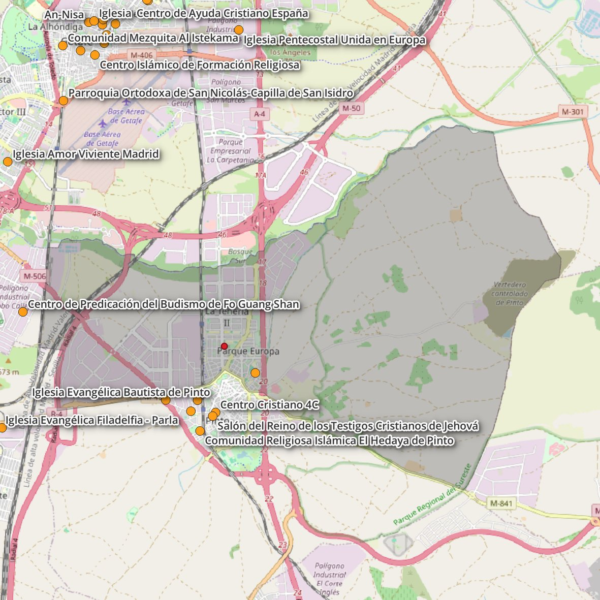
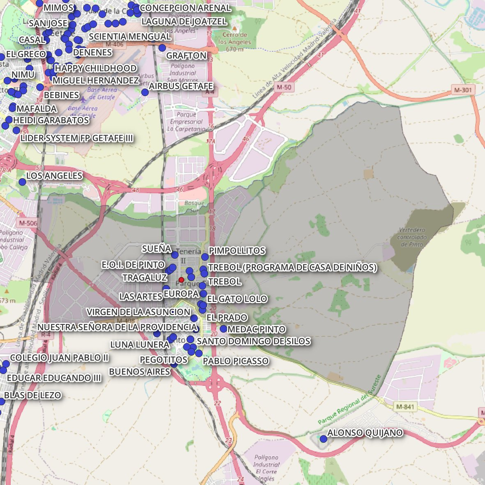

Puntos de interés en el territorio parroquial
Parroquia San Francisco Javier (Pinto) · Arciprestazgo de Valdemoro
Entidades religiosas no católicas

1 entidad religiosa no católica en el territorio de la parroquia.
Ortodoxos (1)
- Parroquia Ortodoxa Rumana Santos Atanasio y Cirilo Patriarcas de Alejandría de PintoCalle de San Joaquín 11, Pinto
Fuente: Registro de Entidades Religiosas del Ministerio de la Presidencia, Justicia y Relaciones con las Cortes. Situación en el mapa: dirección geocodificada con CartoCiudad (IGN) o Nominatim (OpenStreetMap).
Centros educativos

13 centros educativos en el territorio de la parroquia (público: 10, privado: 2, privado concertado: 1).
| Centro | Tipo | Titularidad | Domicilio | Web |
|---|---|---|---|---|
| CALASANZ | Centro privado de educación infantil, primaria y secundaria | Privado concertado | Calle Asturias, s/n, 28320 Pinto | Página web |
| CALDERON DE LA BARCA | Instituto de educación secundaria | Público | Calle Francisco Bores, 3, 28320 Pinto | Página web |
| DOS DE MAYO | Colegio de educación infantil y primaria | Público | Calle Ruperto Chapí, 1, 28320 Pinto | Página web |
| E.O.I. DE PINTO | Escuela oficial de idiomas | Público | Calle Manuel Hernández Mompo, 2, 28320 Pinto | Página web |
| EL PRADO | Colegio de educación infantil y primaria | Público | Calle de la Cañada Real de la Mesta, 9, 28320 Pinto | Página web |
| EUROPA | Colegio de educación infantil y primaria | Público | Calle Grecia, 1, 28320 Pinto | Página web |
| LAS ARTES | Colegio de educación infantil y primaria | Público | Calle Juana Francés, 57, 28320 Pinto | Página web |
| MIRASUR | Centro privado de educación infantil, primaria y secundaria | Privado | Calle Pablo Gargallo, s/n, 28320 Pinto | Página web |
| PIMPOLLITOS | Escuela infantil | Público | Calle Asturias, 91, 28320 Pinto | Página web |
| SUEÑA | Escuela infantil privada | Privado | Avenida Juan Pablo II, 22, 28320 Pinto | Página web |
| TRAGALUZ | Escuela infantil | Público | Calle Manuel Hernández Mompo, 4, 28320 Pinto | Página web |
| TREBOL | Escuela infantil | Público | Calle Asturias, 89, 28320 Pinto | Página web |
| VICENTE ALEIXANDRE | Instituto de educación secundaria | Público | Calle Asturias, 20, 28320 Pinto | Página web |
Fuente: registro de centros educativos de la Comunidad de Madrid. Solo se recogen los centros de alta.